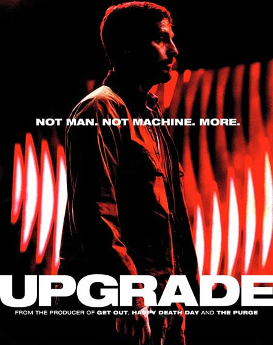
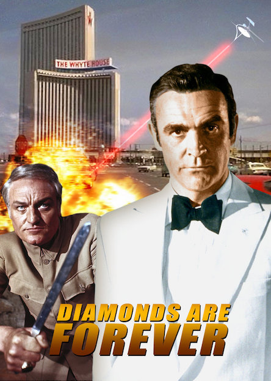
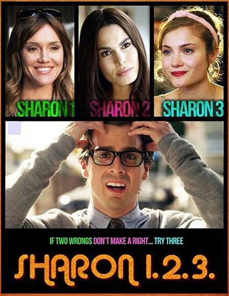
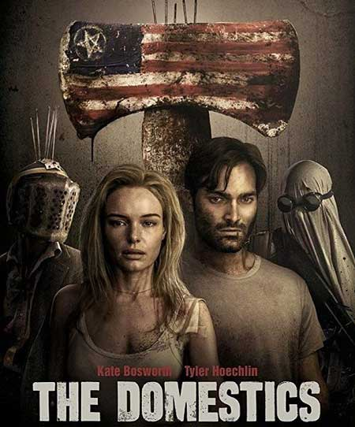

მოწოდებით მხედარი / Destined to Ride (2018/RUS/WEB-DL/720p)
ONLINE
წელი: 2018
ჟანრი: სათვგადასავლო, საოჯახო
ხანგრძლივობა: 01:33:07
გახმოვანება: რუსული (პროფესიონალური) (მრავალხმიანი)
ოფიციალური ხმა
რეჟისორი: ანა ელიზაბეტ ჯეიმსი
როლებში:
დენის რიჩარდსი, მადლენ კეროლი, ჯოზეფ ლოურენსი, ნიკ სირსი, კასი ტომსონი, გრეის ჯონსტონი, ემბერ მონტანა, მანოლო გონზალეს-ვერგარა, ოლივია ჯორდანი, კონორ მაკრეიტი
ფილმის შესახებ:
ლილი ცხოვრება გადატრიალდება, როდესაც მას მეგობრებს დააშორებენ და წაიყვანენ მამულში, ბუნების მოყვარულ დეიდასთან…
IMDB რეიტინგი: 6.6/10 (41 ხმა)
[გადმოსაწერად წაიკითხეთ დაწვრილებით]
| დათვალიერება: 652 ჯერ | დატოვეთ კომენტარი |
მსასიკვდილო ქორწილი / Deadly Vows (2017/RUS/WEB-DL/720p) ONLINE
წელი: 2017
ჟანრი: დრამა, კრიმინალი
ხანგრძლივობა: 01:32:47
გახმოვანება: რუსული (პროფესიონალური) (მრავალხმიანი)
რეჟისორი: ფრედ ოლენ რეი
როლებში:
ბრიტანი ანდერვუდი, შარლინ ამოია, კამერონ იებო, კეტრინ ლი სკოტი, გენრი ლებლანკი, ჯერალდ უები, ემი ვულფი, ბრენდონ უილიამსი, სკოტ ტომას რეინოლდსი, პიტ ჯონსონი
ფილმის შესახებ:
ჰელენა კლავს თავის საქმროებს, როდესაც ატყობს, რომ ისინი არ აკმაყოფილებენ მის მაღალ სტანდარტებს, მაგრამ მისი ახალი მომავალი მეუღლის და ეჭვობს, რომ რაღაც ხდება…
IMDB რეიტინგი: 5,4/10 (315 ხმა)
[გადმოსაწერად წაიკითხეთ დაწვრილებით]
| დათვალიერება: 102 ჯერ | დატოვეთ კომენტარი |
განახლება / Upgrade (ქართულად) (2018/GEO/WEB-DL) ONLINE

წელი: 2018
ჟანრი: საშინელება, ფანტასტიკა, ბოევიკი, თრილერი
ხანგრძლივობა: 01:43:43
გახმოვანება: ქართული (მრავალხმიანი)
რეჟისორი: ლი უონელი
როლებში:
ლოგან მარშალ-გრინი, რიჩარდ ანასტასიოსი, როსკო კემპბელი, რიჩარდ კოუტორნი, ლინდა კროპერი, სტივ დანიელსენი, მაიკლ მ. ფოსტერი, ბეტი გებრიელი, რენა გალახერი, ჰარისონ გილბერტსონი
ფილმის შესახებ:
მოვლენები უტოპიურ მომავალში ვითარდება, რომელშიც “ჭკვიანი” ტექნოლოგიები ადამიანის ცხოვრების თითქმის ყველა ასპექტს აკონტროლებენ. ექსპერიმენტული მკურნალობის შედეგად ნაწილობრივ პარალიზებული ტექნოფობი სახელად გრეი, მისი მეუღლის მკვლელობის და საკუთარი ფიზიკური ტრავმის გამო შურისძიებას გადაწყვეტს. მისი შურიძიების მთავარი იარაღი და ერთადერთი იმედი – კომპიუტერის ჩიპიანი ექსპერიმენტული იმპლანტატია, სახელწოდებით – Stem…
IMDB რეიტინგი: 7.7/10 (27,151 ხმა)
КиноПоиск რეიტინგი: 7.450 (1654 ხმა)
[გადმოსაწერად წაიკითხეთ დაწვრილებით]
| დათვალიერება: 2,336 ჯერ | დატოვეთ კომენტარი |
Diamonds Are Forever / ბრილიანტები სამუდამოდ (ქართულად) (1971/GEO/HDrip) ONLINE

წელი: 1971
ჟანრი: მძაფრ-სიუჟეტიანი, სათავგადასავლო, თრილერი
ხანგრძლივობა: 01:45:56
გახმოვანება: ქართული (მრავალხმიანი)
რეჟისორი: გაი ჰემილტონი
როლებში:
შონ კონერი, ჯილ სტ ჯინი, ჩარლს გრეი, ლანა ვუდი, ჯიმი დენი, ბრიუს კებოტი
ფილმის შესახებ:
ბრილიანტებს იპარავენ იმისათვის, რომ გადაყიდონ საერთაშორისო ბაზარზე.ჯეიმს ბონდი მორიგი მისიიის შესასრულებლად მიდის ლას ვეგასში სადაც მის მოსისხლე მტერს ბლოფელდს ხვდება. ლეგენდარული ბონდიანის მეშვიდე ფილმი შონ კონერის მონაწილეობით.
IMDB რეიტინგი: 6.7/10 (83,488 ხმა)
[გადმოსაწერად წაიკითხეთ დაწვრილებით]
| დათვალიერება: 144 ჯერ | დატოვეთ კომენტარი |
1.2.3. შარონი / Sharon 1.2.3 (2018/RUS/WEB-DL/720p) ONLINE

წელი: 2018
ჟანრი: კომედია
ხანგრძლივობა: 01:23:31
გახმოვანება: რუსული (პროფესიონალური) (მრავალხმიანი)
რეჟისორი: მარკ ბრაუნი
როლებში:
ჯინა როდრიგეზი, ნადინ ველასკესი, სკაილერ სემიუელსი, ერინ ჰეისი, არტი მანი, ჯილიან როუზ რიდი, ვიკ სახაი, მეთ ბუში, უილ ჰარისი, ლილა გომესი
ფილმის შესახებ:
იონა – ბავშვობაში ნამდვილი ბოტანი იყო, რის გამოც ხულიგანი კოვალსკი მას მუდმივად დასცინოდა. გადის წლები, და იონა წარმატებულ საქმიან მამაკაცად გადაიქცევა, რომელიც ახლა ფუფუნებაში ცხოვრობს და ორ მომხიბლავ ქალბატონს ხვდება, რომლებსაც სახელად შარონი ჰქვიათ. მაგრამ მოულოდნელად ყველაფერი თავდაყირა დადგება, როდესაც იონა მესამე ქალს – ასევე სახელად შარონის შეხვდება, და სიგიჟემდე შეუყვარდება. იმისათვის, რომ იონამ ყველაფერი სწორად გააკეთოს და დიდი ხნის შიში გადალახოს, ბავშვობაში მის მჩაგვრელ კოვალსკის უნდა დაუპირისპირდეს…
IMDB რეიტინგი: 5,5/10 (44 ხმა)
[გადმოსაწერად წაიკითხეთ დაწვრილებით]
| დათვალიერება: 154 ჯერ | დატოვეთ კომენტარი |
შინაურები / The Domestics (ქართულად) (2018/GEO/WEB-DL) ONLINE

წელი: 2018
ჟანრი: საშინელება, თრილერი
ხანგრძლივობა: 01:37:25
გახმოვანება: ქართული (მრავალხმიანი)
რეჟისორი: მაიკ პ. ნელსონი
როლებში:
ტაილერ ჰეკლინი, კეიტ ბოსვორტი, სონოია მიდზუნო, დავიდ დასტმალჩიანი, ლენს რედიკი, დენა გურიე, ლორა კაიუეტი, მაიკ პ. ნელსონი, დეივ დევისი, ბრედ ლელენდი
ფილმის შესახებ:
საშინელ პოსტ-აპოკალიფსულ სამყაროში, დასახლებული ბანდებით, დაყოფილი სასიკვდილო ფრაქციებად, ქმარი და ცოლი უიმედოდ გარბიან ქალაქგარეთ უსაფრთხოების მოსაძებნად…
IMDB რეიტინგი: 5,7/10 (2,698 ხმა)
[გადმოსაწერად წაიკითხეთ დაწვრილებით]
| დათვალიერება: 3,227 ჯერ | დატოვეთ კომენტარი |